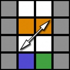
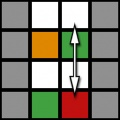
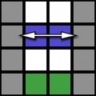

U pattern cases:
The U cases have an average of 10 1/6 turns
UD:
UR:


UB:
H pattern cases:
The H cases have an average of 12 1/4 turns
CFCE or Cross, First 2 layers, Corners of last layer, and Edges of last layer is a speedsolving method that uses CFOP style first two layers and finishes with CLL/Ell instead of OLL/PLL.
This step should be fairly easy as it is the same as most beginner methods as well as CFOP. All you have to do is solve all the edges of one side (usually the white).
This step can take anywhere from 0-12 turns.
This step is done by inserting a corner then inserting the matching equator layer edge. F2L can be done using anywhere from 0-41 algorithims.
If you would like to learn more about F2L either look up intuitive F2L on youtube or go here for F2L algs.
CLL has 42 cases separated by the corner pattern into 8 groups.
The U cases have an average of 10 1/6 turns
The H cases have an average of 12 1/4 turns
ELL has a total of 29 cases 4 of which are PLLs and the rest are PLLs with edge flips except for the 3 pure-flips.
The CFCE method has 71-112 depending on the number of F2L cases memorized but its main pro is that it has fewer total algs than CFOP while maintaining a similar or lower average turn count.